Zurück nach Rio: Frühstück, dann von Florianópolis über Congonhas zum Stadtflughafen Santos Dumont, der direkt an der Guanabara-Bucht liegt. Die G20-Banner hängen noch.
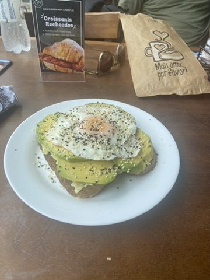
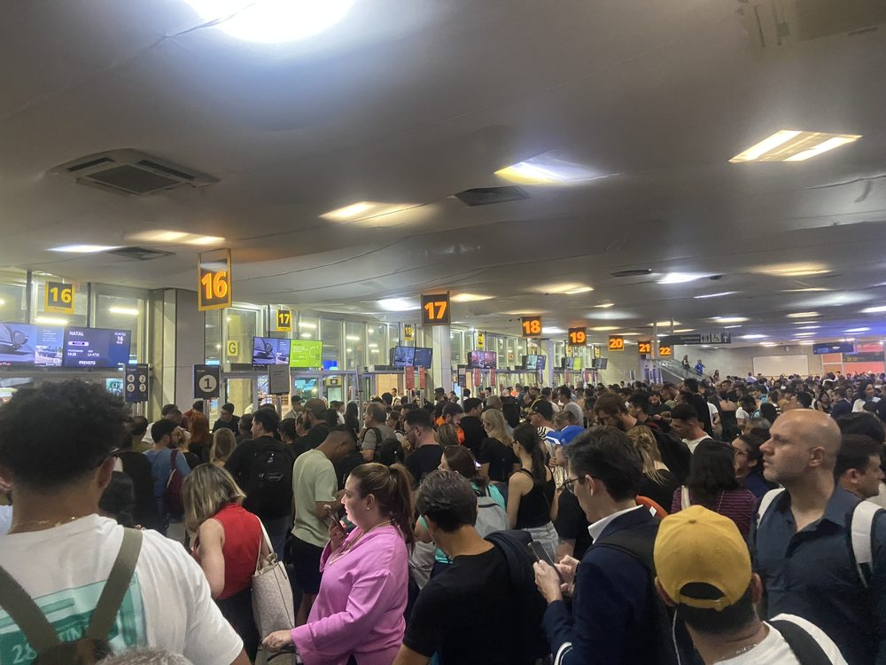
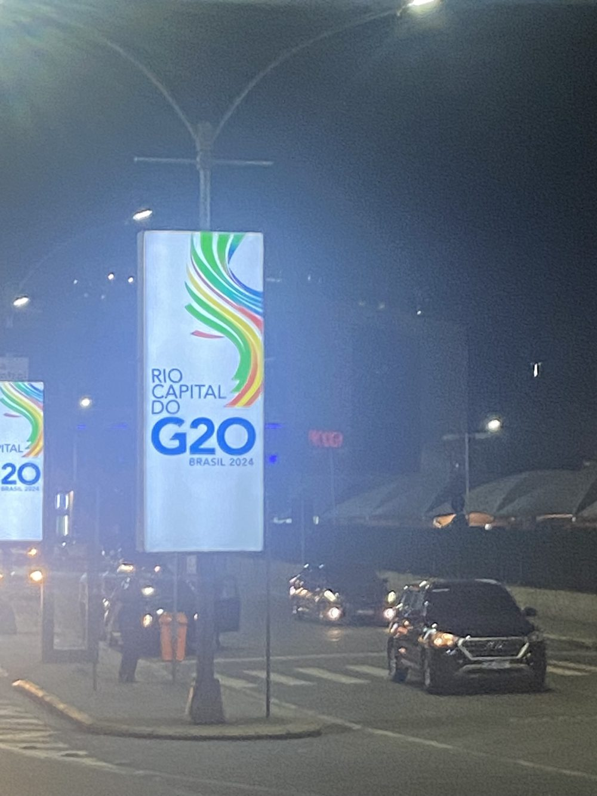
Cristo Redentor: Mit der Zahnradbahn von 1884 durch den Tijuca-Wald auf den Corcovado. Oben die Christusstatue, 1931 eingeweiht, 30 m hoch auf 8 m Sockel, seit 2007 eines der „neuen sieben Weltwunder". Von hier sieht man die ganze Stadt, bis zum Maracanã.
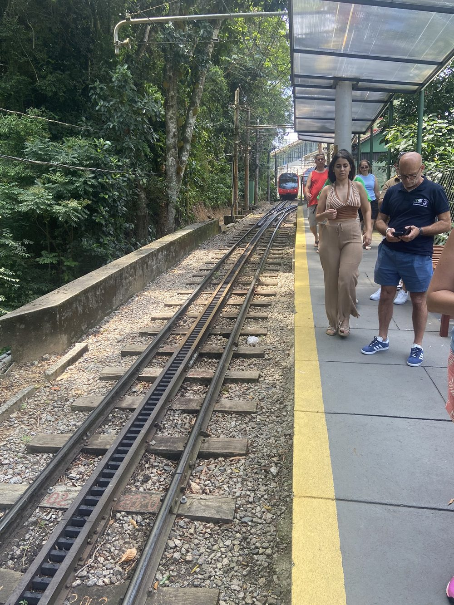

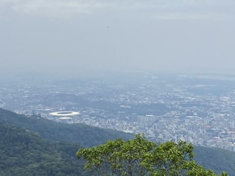
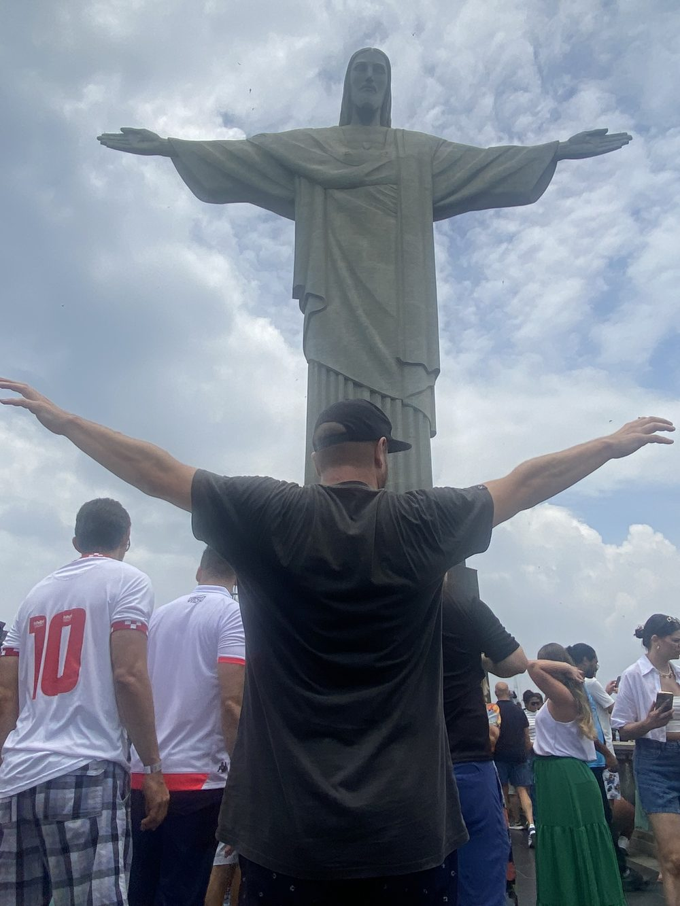
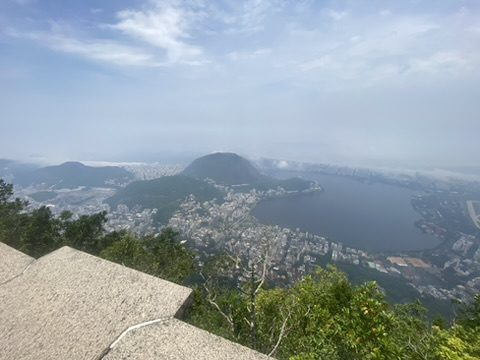
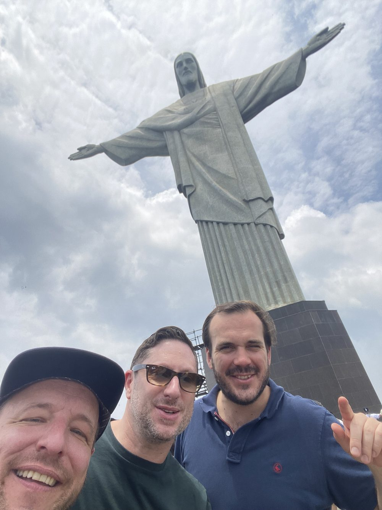
Sambódromo, Saara und Hafen: Nachmittags noch einmal am Sambódromo, wo in den Hallen schon an Wagen und Kostümen für den Karneval gebaut wird, dann durch die Saara, Rios größtes Einkaufsviertel unter freiem Himmel, und zum Hafen: der Nachbau eines portugiesischen Entdeckerschiffs, das Museu do Amanhã. Am Sonntag, 1. Dezember, geht es über Lissabon nach Hause.
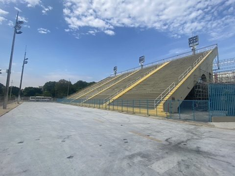
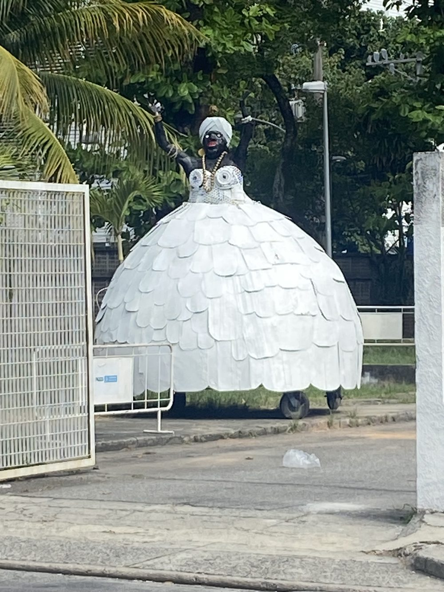
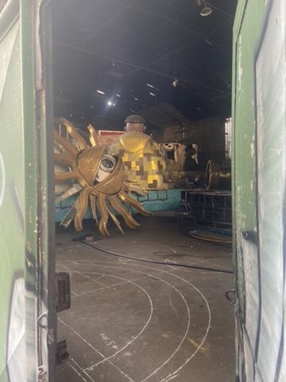
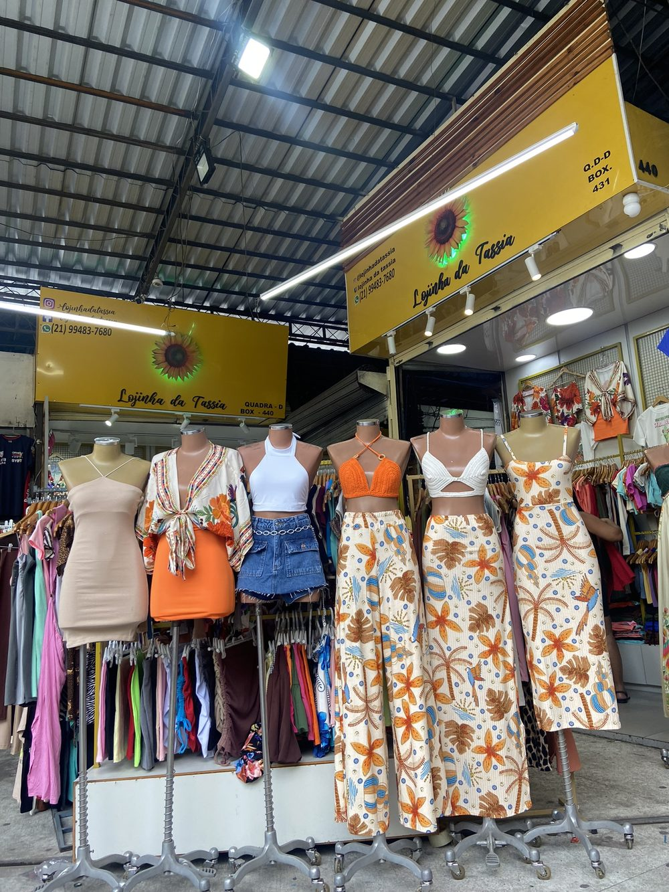
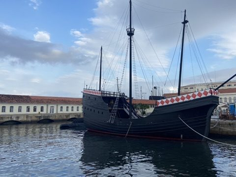
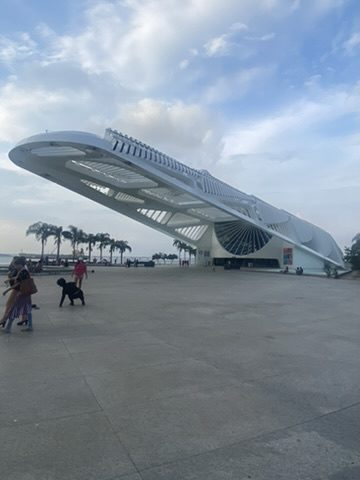